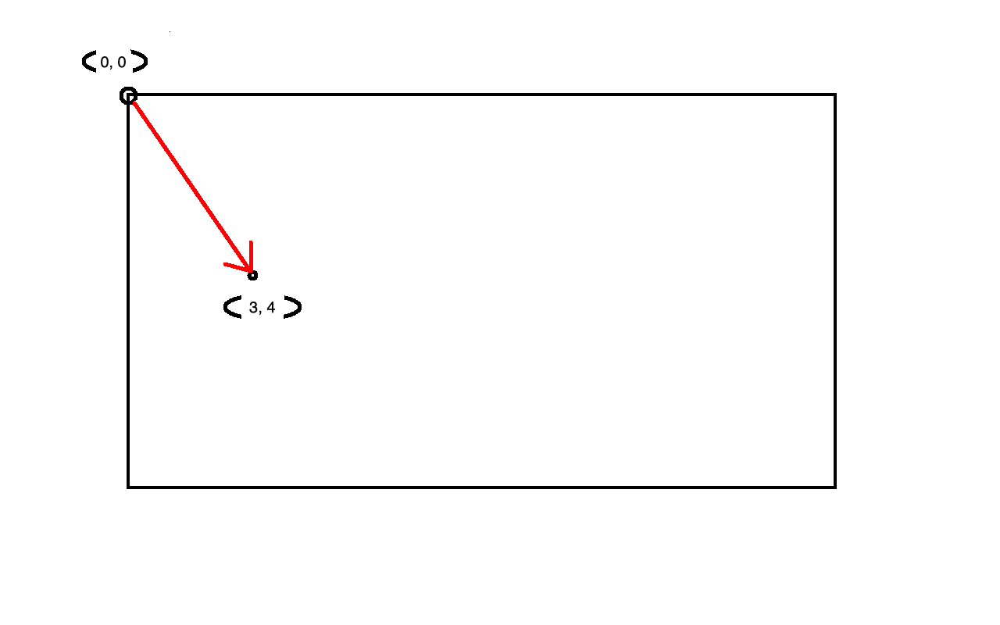
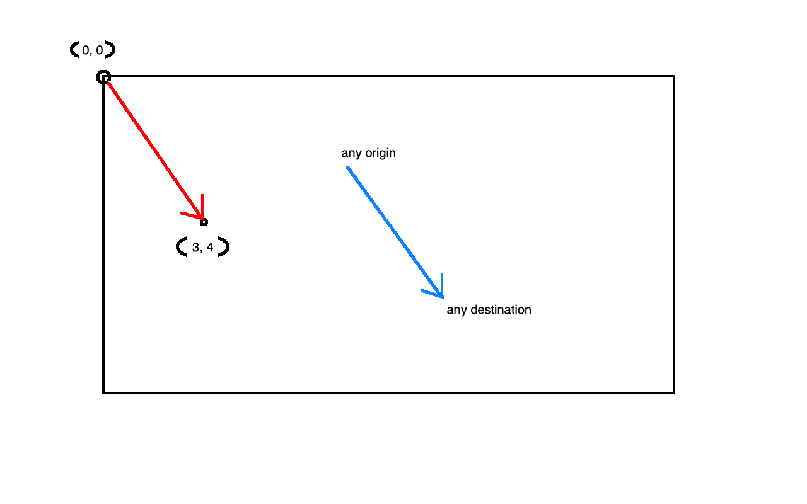
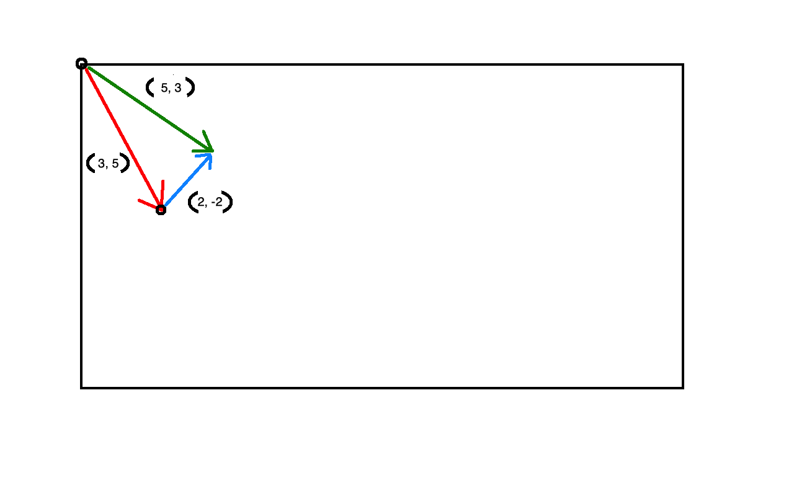
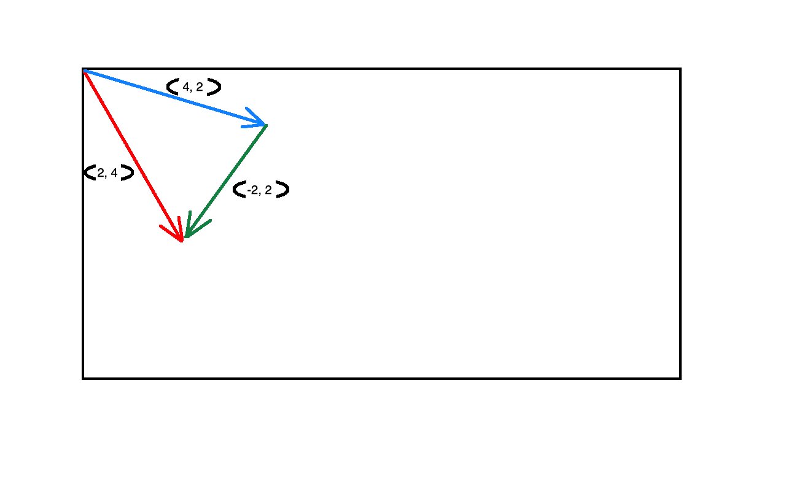
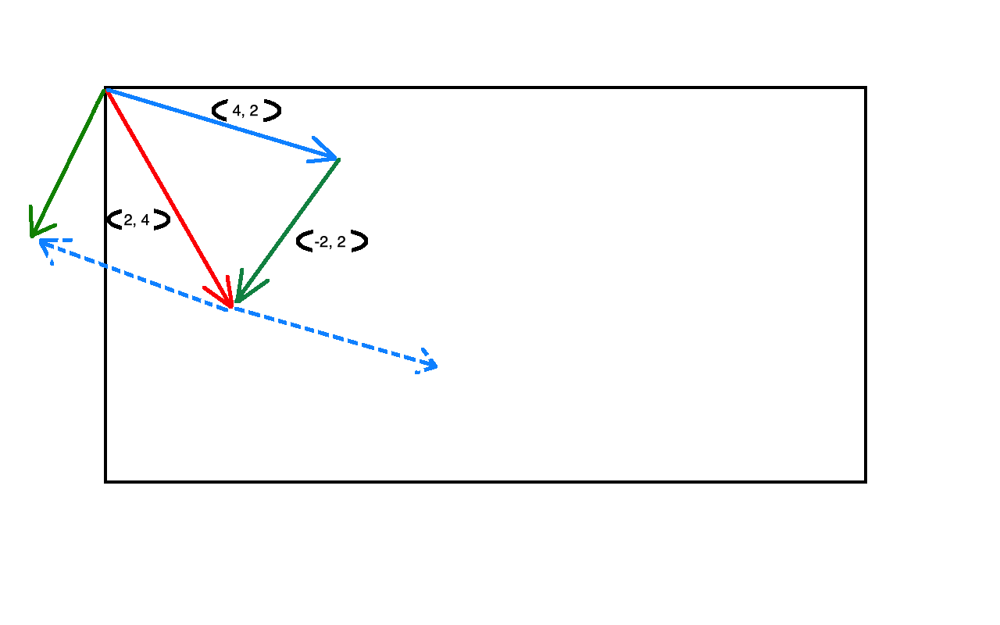
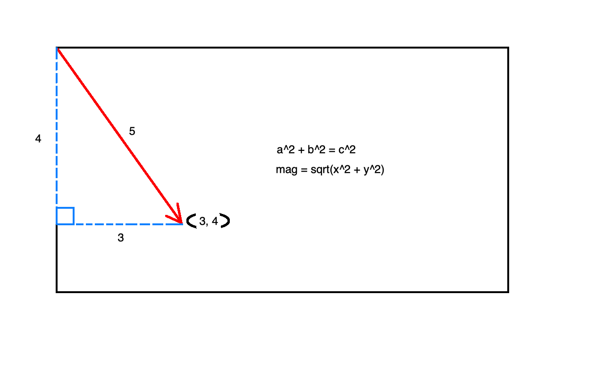

Vectors
To start with, what are vectors and why are they important to us? In the domain we're working in, a vector is a way for us to conceptualize motion and/or position. It has built into it the concept of a "magnitude" and a "direction". That's all very vague, and an illustration will help us a lot.
Since we're working in two dimensions, we'll represent a vector as a set of (x, y) coordinates.
// Vec2.ts
export class Vec2 {
x: number;
y: number;
constructor(x: number, y: number) {
this.x = x;
this.y = y;
}
}
This is great, because we're already representing our player's position as a set of x, y coordinates, so we can drop this straight into our player class.
export class Player {
width: number = 50;
height: number = 25;
pos: Vec2;
ctx: CanvasRenderingContext2D;
constructor(ctx: CanvasRenderingContext2D) {
this.ctx = ctx;
this.pos = new Vec2(ctx.canvas.width / 2, ctx.canvas.height / 2);
}
// ...
}
We can represent our vector on our coordinate space as an arrow, pointing from some origin point, (because we're drawing things on a canvas, our origin point is going to be the canvas origin at (0, 0)). The way the arrow is pointing is our vector's direction, and its length is the magnitude. If we have a vector (3, 4), we could represent it like this.
An important thing to remember about vectors is, unless you're drawing something in a coordinate space, the origin doesn't matter. We could also represent the same vector like this:
What makes a vector a vector is its magnitude and its direction. These two vectors are equivalent, because both of them, (gimpy drawing aside), have the same magnitude and are pointing in the same direction. They are also represented by the same coordinates, (3, 4).
How can both of these vectors be (3, 4)? If we draw a point at (3, 4) on the screen, it will be at the tip of the red arrow. The tip of the blue arrow is god-knows-where. We have to keep in mind that everything we draw is relative to the canvas origin. So if our vector's coordinates are going to show up on the screen where we expect, we'll need to think of them with respect to the canvas origin.
What is so useful about vectors is that we can do mathematical operations with them. Let's take a look at vector addition.
static add(v1: Vec2, v2: Vec2): Vec2 {
return new Vec2(v1.x + v2.x, v1.y + v2.y);
}
Pretty simple, right? We just add the x coordinates to each other and the y coordinates to each other. While simple, it offers us some pretty useful capabilities. Let's take a look at what this looks like in practice.
Adding vectors is essentially chaining them together. If we add the red vector (3, 5) and the blue vector (2, -2), we end up at (5, 3), represented by the green vector. Why is this useful? We can use this to represent forces acting on objects on the screen! If we have an object at (3, 5) and a strong wind pushes it (2, -2), it will end up at (5, 3).
You'll notice that vector addition, like regular addition is commutative. If we were to draw the blue vector from the origin and put the red vector on the end of it, the green vector would stay the same.
Subtraction is just as easy as addition, and offers up some more very helpful functionality.
static subtract(v1: Vec2, v2: Vec2): Vec2 {
return new Vec2(v1.x - v2.x, v1.y - v2.y);
}

This visual representation of vector subtraction demonstrates a handy technique. Let's call the red vector the position of objectA, and the blue vector the position of objectB. objectA's position minus objectB's position gives us a vector that points from objectB to objectA!
Just as we can visualize vector addition by appending one vector onto the end of another, we can visualize vector subtraction in a similar way. If we have two vectors A and B and we are performing A minus B, we can append B onto the end of A, then reverse its direction, and this will give us the result.
Just a few more vector operations should be sufficient for us to implement our desired character movement. (Indeed, we don't even need subtraction for this, it's just good to know about).
Vector scaling is increasing or decreasing the magnitude by a certain factor. Really, it's just multiplication. Scaling by a factor of 2 will double the magnitude, while scaling by a factor of 0.5 will cut it in half.
static scale(vec: Vec2, factor: number): Vec2 {
return new Vec2(vec.x * factor, vec.y * factor);
}
Normalization is scaling a vector such that its magnitude becomes 1. (A vector with a magnitude of 1 is known as a "unit vector"). This greatly simplifies some calculations for us. To do this, we'll divide the vector by its magnitude, (or in practice, we'll scale it by one divided by its magnitude). Of course, we'll first need to find the vector's magnitude. We can do this with the Pythagorean Theorem.

mag(): number {
return Math.sqrt(this.x ** 2 + this.y ** 2);
}
Now we can perform the normalization.
normalize(): Vec2 {
const mag = this.mag();
return this.scale(1 / mag);
}
We're doing a lot of manipulation of a vector's magnitude. Sometimes we just want to set the magnitude to some known value. For example, let's say we want our player to shove an enemy away with some magical force. (Not this game, obviously). We could subtract the player's position from the enemy's, giving us a vector pointing from the player to the enemy, but now we want to set our push force to the character's pushForce statistic. We can set the magnitude of a vector by combining normalization and scaling.
setMag(mag: number): Vec2 {
return this.normalize().scale(mag);
}
You'll notice when we defined scale a moment ago, it was a static method, while setMag uses an instance version of this. I've created static and instance methods for most of these functions so we can choose whether to create new vectors or modify existing ones. The instance methods return this so that we can perform chained operations like this one. Let's proceed with our magical force push.
// vector pointing from player to enemy
const force = Vec2.subtract(enemy.position, player.position);
force.setMag(player.pushForce);
enemy.position.add(force);
Hopefully the pieces are starting to fit into place, and you can see how we're going to end up controlling our onscreen objects with vectors. In the next lesson, we'll put what we've learned into practice and finalize the movement for our player.
Previous Next